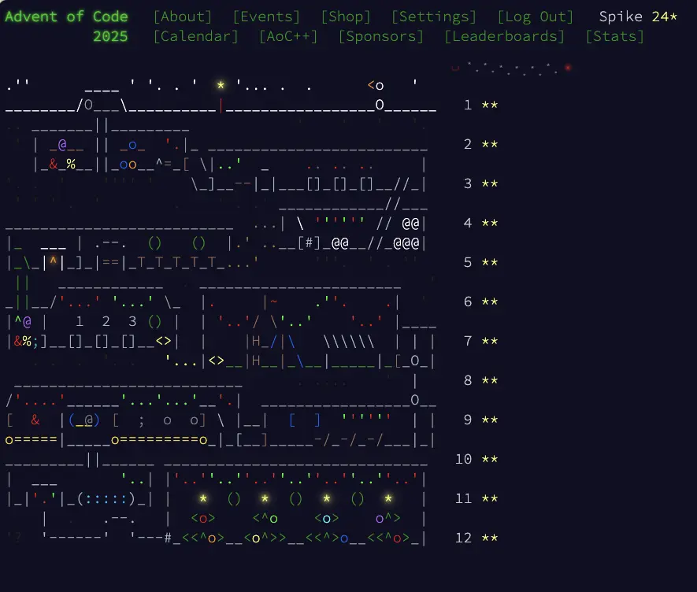
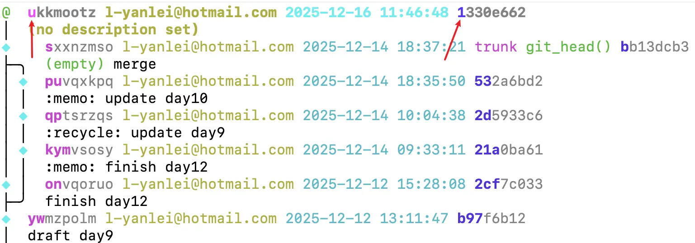

Advent of Code 2025 day12 and Review
Day12
day12 的输入是：
0: ### ##. ##. 1: ### ##. .## 2: .## ### ##. 3: ##. ### ##. 4: ### #.. ### 5: ### .#. ### 4x4: 0 0 0 0 2 0 12x5: 1 0 1 0 2 2 12x5: 1 0 1 0 3 2
其中：
0: ### ##. ##.
表示下标 0 的一个形状，形状由 # 组成， . 的部分是空的，不占据空间。
每个图形可以根据需要旋转和翻转， # 组成的图形部分不能重叠，不过像是图形中的 . 因为是空的，其他图形可以插进去，将不同的图形组合到一起。
有点像是俄罗斯方块的感觉。
4x4: 0 0 0 0 2 0 表示存在一个 4x4 的空间，要求在里面放置：
- 0 个下标 0 图形
- 0 个下标 1 图形
- 0 个下标 2 图形
- 0 个下标 3 图形
- 2 个下标 4 图形
- 0 个下标 5 图形
下标 4 的图形长这样：
4: ### #.. ###
在 4x4 的空间里，一种摆放方法是：
AAA. ABAB ABAB .BBB
A 和 B 分别是 2 个下标 4 的图形。
part1 的问题是，对于每一行输入：
4x4: 0 0 0 0 2 0 12x5: 1 0 1 0 2 2 12x5: 1 0 1 0 3 2
要求的图形是否能够全部摆放进去。
每个图形都可以旋转、翻转，还要考虑图形中的空白部分，思考如何最大程度地利用空间，想想都觉得头大，看起来是个很复杂的问题。
不过每个图形都有面积，要求所有图形都能放在一个区域里，那么区域面积应该大于或等于所有图形面积之和。有没有可能只要这么判断一下就好了？
于是用示例进行验证，发现行不通，对于 12x5: 1 0 1 0 3 2 ，区域面积是 12x5 即 60；而所有图形的面积是 1x7 + 0x7 + 1x7 + 0x7 + 3x7 + 2x7 = 49；区域面积足以放下所有的图形，但示例中已经明确表示 12x5: 1 0 1 0 3 2 是放不下所有图形的，因为有图形会出现重叠。
对这样的问题也是没思路，不想死磕了，就去 reddit 看看大伙儿有啥思路，然后发现很多人都说直接比较区域面积和所有图形面积就可以了，尽管示例过不去，但对于实际的输入是可以通过的。
(╯°□°）╯︵ ┻━┻
啊？真的假的？半信半疑地写了函数试了试，还真的通过了。
{kind=link}
通过之后 part2 就没有题目了，「一棵特别大的圣诞树突然闪烁着耀眼的光芒，一颗巨大的星星奇迹般地出现在它上方！当你的眼睛重新适应时，你似乎看到一个留着白胡子的胖男人消失在人群中。」只要拿满 23 颗星星，就可以爬上楼梯，去树顶摘取最后一颗星星，装点圣诞。
然后看到了作者 Eric Wastl 留下的彩蛋：
I need to throw in a puzzle like this occasionally to keep everyone on their toes, right?
哈哈哈，原来 day12 这么做是故意的。
不过肯定也有办法去解决问题的，但我不想折磨自己了。这实际上是一个 装箱问题 (Packing problems)，如果你感兴趣可以在 -❄️- 2025 Day 12 Solutions -❄️- 找找解法。
Review
{kind=link}

12 天的 Advent of Code 终于结束了，这是我第一次做完所有的谜题，也是第一次知道原来每天的谜题里都有一个小彩蛋。
获得 24 颗星之后，回到日历页，精灵们还会带着圣诞老人从屏幕上面飘过。日历的图案是这 12 天里走过的地方，有一些是会动的，一些特征会让人想起曾经解决过的谜题， 2025 年的日历还挺精美的。
以往的 AoC 都是持续 24 天的，但制作谜题并不容易，很花费时间，所以今年开始缩减到 12 天了。我觉得 12 天挺好的，轻松一些，如果是 24 天，经常碰到没有思路的情况，我可能会很容易放弃。
24 天也有好处，坚持做 24 天题，每天可以在 reddit 上和大家一起讨论、发点梗图，最后在圣诞节大家互道祝福，每个人都像是一个为圣诞节准备的精灵，有种很热闹的感觉，增添了节日的氛围。
不过如果谜题解不开，大概也会有点郁闷。当跟不上谜题的发布，甚至 24 天过去了，谜题还有不少没做完，可能圣诞节会没那么开心 :P
{kind=link}
我觉得逛 reddit 也是参与 AoC 的一部分，reddit 增添了 AoC 的趣味。有时题目很难，心情不好，去 reddit 看看大家的吐槽、梗图，心情就好点了；也可以从评论里找找思路，继续挑战谜题。
看到很多人都解决了，自己却没有思路，不知道怎么写，我是会有一种挫败感的。但想想原因，可能是自己对某些算法和数据结构不熟悉，可能某些知识压根就不知道，不管哪种情况都说明存在不足，弄明白了都是一种收获，其实是一件让人开心的事情。
这一次参加因为空闲时间比较多，我也尝试记录自己的思路，这逼迫我将不理解的地方尽可能弄明白，否则就写不出来了。另一方面也是为了在今年完成 100 篇博客文章，所以记录下来凑凑数。
我也看到其他人通过博客文章的形式分享他们的思路，例如：
- Josiah Winslow solves Advent of Code by Josiah Winslow
- Advent of Code 2025: Waking Up With Puzzles by Yordi Verkroost
这次参与尝试了用 python，了解了一些基本语法，但还没完整看过一遍教程；一些操作我写起来感觉很麻烦，大概也有更好地写法。
也有不少人用 python 解题，去看别人的题解也能学到很多。对比之下，也暴露了一些自己编码上的问题：
- 我写的函数往往都比较长，逻辑比较多。更好的做法是拆分出职责单一的函数，组合在一起，可读性也会更好。
- 变量取名还是很难，总是想不到合适的变量名。
- 谜题需要读取文件，将文件内容转换成合适的数据结构。写的时候我总是容易搞不清楚参数的数据结构，有时是字符串，有时是数字，比较乱。更好的做法可能是在最开始先将数据处理好，而不是在后续的函数中各自处理。 python 似乎可以像 Typescript 一样显式地标记参数和返回的类型，或许也会有所帮助。
除了 python，这次也尝试了 Jujutsu(jj)，一个兼容 git 的版本控制系统，声称「比 git 更简单、更容易，但同时又更强大」。我通读了一遍 Steve's Jujutsu Tutorial，然后就开始用了。
jj 的大致流程是这样的（比较常用的命令）：
jj git init- 初始化仓库
jj config set --user user.name "Your Name"- 配置提交者用户名
jj config set --user user.email "your@email.com"- 配置提交者邮箱
jj new- 创建一个新的改动，像是准备一张新的、干净的草稿纸。
jj describe每次修改，jj 都会自动记录变化，每次变化都会自动做一次
git commit。不需要git add之类的操作存到暂存区。jj 有 ChangeID 和 CommitID，CommitID 对应的是 git 中的提交，经常会变化，大多时候也不需要关心。 ChangeID 是可以理解为 jj 自己的提交 ID，会跟踪 CommitID。
jj describe可以描述当前的改动，任何时候都可以使用jj describe，不一定是提交的时候才用。jj st- 查看当前的改动
jj log- 查看日志，jj 有一个 revision set 的概念，提供了一些函数配合
jj log使用。例如查询所有的日志，命令是jj log -r 'all()'，查询条件非常丰富。 jj bookmark create trunk在当前提交创建一个
trunk分支。jj 也有分支的概念，但分支名在 jj 中不重要，分支名只有在提交时才需要关注。
jj 中从某个提交创建分支，可以用
jj new ChangeIDjj bookmark set trunk- 将 trunk 标记在当前的 ChangeID 上。
jj git remote add origin git@github.com:steveklabnik/jj-hello-world.git- 添加 git remote
jj git push- 推送本地改动到远端
jj 的流程和 git 不太一样，在 git 里，一般是修改后，选择要提交的改动(git add)，然后提交(git commit)。在 jj 里，修改后描述这次修改的内容(jj describe)，就结束了，然后就可以开始做新的改动 (jj new)，如果要选择提交，似乎还得 主动拆分。
jj 的一个问题是，它总是在修改 git 的记录，默认情况下，只要做了修改，就会形成新的 commit ID，感觉容易弄乱 git 的提交记录。自己一个人维护倒是问题不大，如果多人协作，可能会经常发生本地改了 git 提交记录，覆盖了远端仓库的情况。不过我没有用 jj 多人协作过，大概是有解决办法的？还是有很多需要去弄明白的地方。
jj 也有一些我觉得不错的功能，例如可以用 ID 的前几个字符指定 ID，而不用写全，在命令行上用就会容易一些。
{kind=link}

jj 合并分支比 git 容易很多，例如分支情况是这样的：
> jj log @ ymvptyyq steve@steveklabnik.com 2024-03-17 14:25:31.000 -05:00 push-ymvptyyqmyul 728dbb1e │ (empty) fixing all the breakage from updating dependencies ◉ xulymzyp steve@steveklabnik.com 2024-03-17 14:25:14.000 -05:00 1f7c69a5 │ (empty) updating dependencies │ ◉ zxyukunn steve@steveklabnik.com 2024-03-17 14:24:56.000 -05:00 push-zxyukunnwolo 30081a6b │ │ (empty) first 80% done │ ◉ tzsloruo steve@steveklabnik.com 2024-03-17 14:24:21.000 -05:00 7c02f6ce ├─╯ (empty) another feature │ ◉ rxpztwms steve@steveklabnik.com 2024-03-17 14:23:00.000 -05:00 push-rxpztwmsszvk 902a6cd2 │ │ (empty) various fixes │ ◉ tmnmvxyy steve@steveklabnik.com 2024-03-17 14:22:15.000 -05:00 105cf6b5 ├─╯ (empty) prepare to deploy to the cloud │ ◉ yxxppztp steve@steveklabnik.com 2024-03-17 14:18:00.000 -05:00 push-yxxppztpoyqq 3d123151 │ │ (empty) have galactus query eks with time range │ ◉ opwqpunl steve@steveklabnik.com 2024-03-17 14:15:58.000 -05:00 1a66beb1 ├─╯ (empty) display the birthday date on the settings page │ ◉ msmntwvo steve@steveklabnik.com 2024-03-02 11:47:08.000 -06:00 push-vmunwxsksqvk 752534be │ │ add a new function │ ◉ vmunwxsk steve@steveklabnik.com 2024-03-02 11:47:08.000 -06:00 f6f7dce9 ├─╯ add a comment to main ◉ ksrmwuon steve@steveklabnik.com 2024-03-01 23:10:35.000 -06:00 trunk e202b67c │ Update Cargo.toml
如果要合并多条分支，在 git 里可能需要多次操作，但在 jj 里， 执行 jj new ym z r yx m -m "merge: steve's branch" 就可以将所有分支合并在一起了。
在 Emacs 里有 magit，是我目前觉得最好用的 gitUI 了，没有之一，它很好地减少了 git 的使用难度。有了 magit，我觉得 git 还是挺好用的，所以 jj 并没有给我带来太多的吸引。不过我还是会继续深入了解一下 jj，熟悉它的使用流程，达到熟练使用的程度。
Anyway，庆祝做完了 12 天的谜题，也写完了记录！
｡:.ﾟヽ(*´∀`)ﾉﾟ.:｡
明年有空继续～